Lesson 1 — agentic_uav
One picture of how a tick flows through the framework — and why its shape is the thesis defense.
agentic method beats heuristic baselines on recovery after disruption. This
lesson gives you the map a reviewer's questions will move across. Every later lesson zooms
into one box on it.
The framework is a shared experiment harness wrapped around one swappable decision layer. Everything — world, events, communication, sensing, metrics — is held constant across all five methods. Only the box labelled "decide" changes. That single design choice is what lets the paper say the methods differ only in reasoning. Hold this sentence in your head and the rest of the codebase falls into place.

docs/architecture.mmd).
Tap to open full-size. Every later lesson zooms into one box here.The heartbeat is Simulation.step() simulation.py. Every
tick runs the same seven beats, in order:
EventInjector fires scheduled disruptions (dropout,
block_sector, urgent_sector). Each fired event also calls method.handle_event().
NetworkModel moves peer messages — range-limited,
delayed, TTL-bounded. This is the only way one UAV learns what another knows.
ObservationBuilder.build() assembles one
observation per UAV from its local view + belief + inbox.
SwarmMethod.decide_tick() turns observations into
a list of Actions. baselines agentic = LLM
MetricsLogger records coverage, active UAVs, messages, and the
replan / plan-change traces used for the recovery analysis.
Notice beats 1–3 and 5–7 are identical for every method. The whole experiment turns on beat 4.
| Layer | What it is | Module(s) |
|---|---|---|
| Config | Scenario, world, UAV, and event setup | scenarios.py, models.py |
| Harness | Tick loop, events, sensing, metrics | simulation.py |
| State | Ground truth + per-method memory + per-UAV belief | models.py, planning.py |
| Decision | SwarmMethod + all 5 methods + build_method() | policy.py |
| LLM seam | Decider protocol, mock default, real vendors | llm_agent.py, llm_providers.py |
| Comms | The only peer-information path | communication.py |
| Output | Metrics, GUI, snapshots, experiment sweeps | experiments.py, gui.py, rendering.py |
One surprise worth pinning: the interface and all five methods live in a single
file, policy.py — not one file per method. The canonical wiring picture is
the figure above (rendered from
docs/architecture.mmd).
The architecture is built to protect two properties. Almost any reviewer attack on the thesis is, underneath, an attack on one of these:
BeliefMap, peer messages, and onboard state. No global oracle, no central planner —
the LLM method included.
The killer question is "isn't the agentic win just a global oracle?" The answer is
structural: the old global urgent_cells list was removed, belief
was moved onto MethodState (not the world), and the observation is built once and
handed to whichever method runs. A UAV out of range with no peer message simply will not know
about a far urgent sector — by design. See ADR-0001.
Answer from memory — don't scroll up. Feedback is immediate.
1. Across the seven beats of a tick, which beat differs between methods?
2. Observation symmetry guarantees that the five methods differ only in —
3. The "agentic win is just an oracle" attack is defused because —
SwarmMethod seam and the swappability
invariant — changing only method_name swaps everything. You'll trace one
observation through build_method() into an Action.
I'm your co-author here — let's dig in any time. "Show me beat 4 in the code," "where exactly is urgent_cells removed," or "let's pressure-test the symmetry claim" all work.